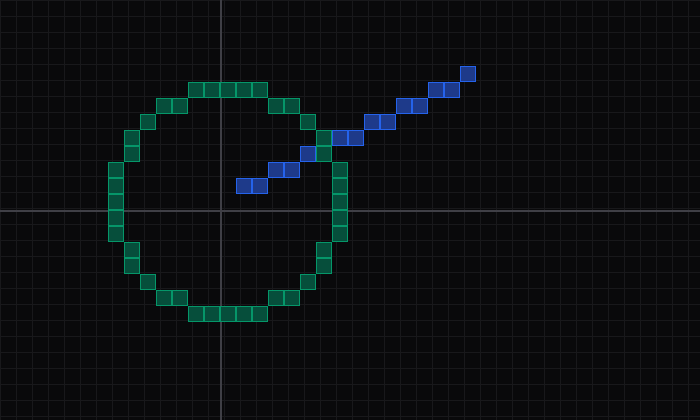

Белорусский государственный университет
Факультет прикладной математики и информатики
ОТЧЁТ
по лабораторной работе №3 по компьютерной графике
Базовые растровые алгоритмы: пошаговый алгоритм, ЦДА, алгоритмы Брезенхема
Выполнил:
студент 4 группы 3 курса
Дикан Д. А.
Преподаватель:
старший преподаватель
Соловей Сергей Сергеевич
Минск, 2026
1. Цель работы
Изучить базовые алгоритмы растеризации отрезка (пошаговый алгоритм, цифровой дифференциальный анализатор, алгоритм Брезенхема) и окружности (алгоритм Брезенхема), провести сравнительный анализ их точности и времени работы, а также разработать веб-приложение для наглядной визуализации дискретной координатной сетки с протоколом вычислений.
2. Теоретические сведения
-
Растровая сетка. Пикселю с целочисленными координатами (x, y) соответствует квадратная ячейка непрерывной плоскости [x, x + 1) × [y, y + 1) с центром в точке (x + 0.5, y + 0.5). Задача растеризации заключается в выборе тех пикселей, центры которых расположены ближе всего к непрерывной математической линии.
-
Пошаговый алгоритм. Основан на прямом вычислении уравнения прямой y = kx + b, где k = Δy / Δx. При |k| ≤ 1 ведущей является ось Ox, шаг равен s = sign(Δx):
xi+1 = xi + s,
yi+1 = yi + k · s,
пиксель (xi, round(yi)).
При |k| > 1 оси меняются ролями (ведущая ось Oy). На каждом шаге выполняются вещественное умножение, вещественное сложение и округление к ближайшему целому.
-
Алгоритм ЦДА (Цифровой дифференциальный анализатор). Длина отрезка в шагах равна L = max(|Δx|, |Δy|). Инкрементальные приращения составляют δx = Δx / L и δy = Δy / L (причем одно из них точно равно ±1):
xi+1 = xi + δx,
yi+1 = yi + δy,
пиксель (round(xi), round(yi)).
Ведущая ось определяется автоматически длиной L. Главное отличие от пошагового метода — отсутствие операции умножения в цикле (выполняется только сложение с приращением).
-
Алгоритм Брезенхема для отрезка. Для базового сектора 0 ≤ Δy ≤ Δx (остальные направления сводятся к нему сменой знаков и перестановкой координат) разностная целочисленная переменная
ei = 2Δx · (y(xi + 1) - yi - 0.5)
отслеживает знак расстояния между серединой двух соседних пикселей и прямой. Начальное значение и итерационный пересчет:
e0 = 2Δy - Δx;
если ei < 0: ei+1 = ei + 2Δy (шаг x++);
иначе: ei+1 = ei + 2(Δy - Δx) (шаг x++, y++).
Все вычисления выполняются строго в целых числах без деления и чисел с плавающей точкой.
-
Алгоритм Брезенхема для окружности. Окружность обладает симметрией относительно 4 координатных четвертей (квадрантов) и диагоналей x = ±y, что делит плоскость на 8 одинаковых секторов (октантов по 45°). Достаточно рассчитать координаты пикселей только для одной восьмой части — сектора от 0° до 45° (где 0 ≤ x ≤ y, начиная от верхней точки (0, R)). Точки для всех 4 четвертей получают отражением: (±x, ±y) и (±y, ±x). Инкрементальная решающая функция:
d0 = 3 - 2R;
если di < 0: di+1 = di + 4xi + 6 (шаг вправо);
иначе: di+1 = di + 4(xi - yi) + 10 (шаг по диагонали, y--).
3. Архитектура и реализация приложения
- Backend (Python 3, Flask): модуль
processing.py содержит чистые функции генерации растровых точек и протокола шагов для каждого метода, main.py реализует веб-контроллер с API /api/rasterize.
- Frontend (HTML5, Tailwind CSS, Canvas API): интерактивный холст с координатной сеткой, пикселями, непрерывной линией и таблицей пошаговой трассировки.
4. Результаты работы
Контрольный пример трассировки алгоритма Брезенхема для отрезка (1, 1) → (13, 7): Δx = 12, Δy = 6, e0 = 2 · 6 - 12 = 0; приращения: 2Δy = 12 (шаг по x) и 2(Δy - Δx) = -12 (шаг по диагонали).
| Шаг |
Пиксель (x, y) |
e |
Принятое решение |
| 0 | (1, 1) | 0 | e ≥ 0: шаг по диагонали, e += -12 |
| 1 | (2, 2) | -12 | e < 0: шаг по горизонтали, e += 12 |
| 2 | (3, 2) | 0 | шаг по диагонали, e += -12 |
| 3 | (4, 3) | -12 | шаг по горизонтали, e += 12 |
| 4 | (5, 3) | 0 | шаг по диагонали |
| 5 | (6, 4) | -12 | шаг по горизонтали |
| 6 | (7, 4) | 0 | шаг по диагонали |
| 7 | (8, 5) | -12 | шаг по горизонтали |
| 8 | (9, 5) | 0 | шаг по диагонали |
| 9 | (10, 6) | -12 | шаг по горизонтали |
| 10 | (11, 6) | 0 | шаг по диагонали |
| 11 | (12, 7) | -12 | шаг по горизонтали |
| 12 | (13, 7) | — | достигнут конец отрезка |

Рис. 1: Растеризация отрезка и окружности алгоритмом Брезенхема
Временные характеристики и сравнение методов
В соответствии с заданием проведено измерение времени работы реализованных функций на наборе из 1000 произвольных отрезков с координатами в диапазоне [-100, 100]:
| Алгоритм |
Время на 1000 линий |
Особенности реализации в коде |
| Алгоритм Брезенхема |
10.9 мс |
Самый быстрый: только сложение, вычитание целых чисел и сдвиги. |
| Пошаговый алгоритм |
22.7 мс |
Медленнее в 2 раза из-за вычисления y = kx + b (умножение float) на каждом шаге. |
| Алгоритм ЦДА |
27.8 мс |
Сложение с вещественными приращениями δx, δy и вызовы округления round(). |
Точность растра: все три алгоритма аппроксимируют отрезок с отклонением центра пикселя от идеальной линии менее 0.5 пикселя. Редкие расхождения в пикселях (около 18% случаев) возникают только тогда, когда линия проходит точно посередине между двумя пикселями (при значении 0.5), где Брезенхем выбирает верхний пиксель, а функция round() в Python округляет к ближайшему четному числу.
5. Выводы
-
Качество растеризации. Все рассмотренные методы строят одну и ту же линию с субпиксельной точностью. Число закрашиваемых пикселей у всех методов совпадает. Небольшие расхождения в выборе конкретного пикселя случаются только в пограничных точках, когда прямая делит расстояние между соседними клетками пополам, что объясняется разницей в правилах округления целочисленной логики и стандартной функции
round.
-
Быстродействие и арифметика. Измерения на 1000 отрезках подтвердили теоретические ожидания: алгоритм Брезенхема оказался в 2–2.5 раза быстрее пошагового метода и ЦДА. Он не использует чисел с плавающей точкой, деления и округлений, за счет чего защищен от накопления погрешности и максимально эффективен на любом процессоре.
-
Симметрия окружности. Растеризация окружности алгоритмом Брезенхема с использованием 8-кратной симметрии (по 2 сектора в каждой из 4 четвертей) позволяет рассчитывать координаты только для одной восьмой части контура. Это сокращает объем вычислений до порядка R / √2 итераций и не требует извлечения квадратных корней.
-
Практическая значимость. Для вывода геометрии на экран базовым стандартом является целочисленный Брезенхем. В то же время алгоритм ЦДА сохраняет ценность в задачах трехмерной графики и конвейерах рендеринга, когда вдоль ребра треугольника требуется плавно интерполировать вспомогательные параметры — цвет, текстурные координаты и глубину.